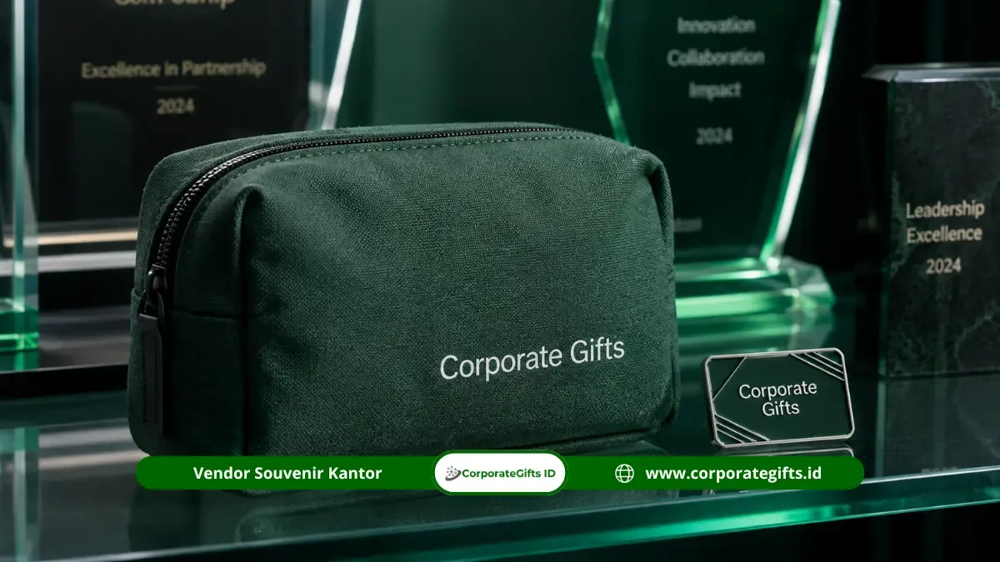

Corporate Gifts ID - Souvenir sosialisasi pajak adalah merchandise berlogo kampanye edukasi perpajakan, seperti totebag, pin, dan pouch serbaguna, yang dibagikan kepada wajib pajak agar pesan kampanye terus diingat dan digunakan dalam aktivitas sehari-hari.
Barang yang dipilih perlu fungsional agar dampak kampanye tidak berhenti pada hari acara saja. Corporate Gifts ID menyediakan aneka pilihan souvenir kantor, totebag kanvas, pin kedinasan, dan pouch yang dapat dicetak logo kampanye instansi secara presisi dan rapi.
Poin Kunci Souvenir Sosialisasi Pajak:
- Fungsionalitas Tinggi: Souvenir yang bermanfaat harian membuat pesan kampanye pajak terus terlihat jauh setelah acara sosialisasi selesai.
- Totebag Custom: Solusi tepat untuk kampanye berjangkauan audiens luas dengan area branding cetak logo yang leluasa.
- Pin dan Gantungan Kunci: Opsi paling efisien untuk pembagian massal dengan biaya per unit yang sangat ekonomis.
- Pouch Serbaguna: Sangat diminati peserta karena dapat digunakan kembali untuk penyimpanan barang pribadi dan alat tulis.
- Penawaran Skala Besar: Harga khusus berbasis kuantitas tersedia melalui konsultasi langsung di CorporateGifts.ID.
Tingkatkan Kesadaran Wajib Pajak dengan Merchandise Tepat Guna
Merchandise yang tepat guna membuat pesan kampanye kesadaran pajak terus terlihat karena barangnya digunakan berulang kali oleh penerima dalam rutinitas kerja dan rumah tangga, bukan hanya ditumpuk atau dibuang seusai seminar.
Program sosialisasi pajak pada umumnya menyasar audiens dalam kuantitas besar, mulai dari pelaku Usaha Mikro, Kecil, dan Menengah (UMKM), komunitas profesional, hingga masyarakat wajib pajak umum di suatu wilayah kerja Kantor Pelayanan Pajak (KPP).
Berdasarkan studi dari lembaga riset promosi industri, The Business Research Company, permintaan terhadap produk merchandise fisik terus tumbuh stabil seiring meningkatnya kesadaran instansi publik dan korporasi akan kekuatan komunikasi berbasis barang fisik. Data ini membuktikan bahwa media merchandise fisik tetap menjadi instrumen komunikasi persuasif yang sangat relevan di tengah pesatnya digitalisasi.
Pemilihan jenis barang menjadi faktor penentu utama efektivitas kampanye. Cinderamata yang terlalu spesifik atau jarang dipakai berisiko hanya disimpan tanpa memberikan dampak jangka panjang. Sebaliknya, merchandise yang memiliki fungsi praktis nyata seperti totebag belanja atau pouch arsip justru berulang kali memaparkan logo dan slogan kampanye kepada orang di sekitar penerima.
Pilihan Souvenir Sosialisasi Pajak yang Paling Efektif
Pilihan yang terbukti efektif untuk sosialisasi perpajakan mencakup totebag custom, pin beserta gantungan kunci eksklusif, serta pouch serbaguna. Seluruh item ini dapat disesuaikan dengan identitas visual kantor pajak dan digunakan berulang kali oleh wajib pajak.
1. Totebag Custom Kampanye Sadar Pajak
Totebag berbahan kain kanvas, blacu tebal, maupun spunbond ramah lingkungan menawarkan bidang permukaan luas yang sangat ideal untuk mencetak ilustrasi slogan kampanye secara full color maupun sablon presisi.
Dimensinya yang praktis membuat totebag kerap dipakai wajib pajak untuk berbelanja, membawa berkas SPT, atau bepergian ke kantor. Dengan demikian, pesan moral dan ajakan sadar pajak secara tidak langsung tersosialisasikan di tempat-tempat umum.

Kombinasi pouch serbaguna, pin logam, dan buku agenda sebagai souvenir edukasi kepatuhan pajak yang fungsional.
2. Pin dan Gantungan Kunci Eksklusif
Pin enamel logam dan gantungan kunci akrilik atau kulit sintetis merupakan opsi souvenir dengan biaya per unit yang sangat efisien untuk pembagian massal saat pekan panutan pajak atau festival edukasi UMKM.
Ukurannya yang ringkas tidak mengurangi nilai publisitas, karena aksesoris ini umumnya disematkan pada tas ransel kerja, kunci kendaraan bermotor, atau tali lanyard ID card yang dilihat setiap hari oleh pemilik maupun rekan kerjanya.
3. Pouch Serbaguna Berlogo Instansi
Pouch berbahan kanvas atau kulit sintetis tahan air sangat disukai oleh audiens sosialisasi karena fleksibilitas kegunaannya. Pouch dapat digunakan untuk menyimpan kabel charger, kosmetik, kwitansi pembayaran, hingga alat tulis kantor.
Ketika penerima memanfaatkannya dalam kegiatan sehari-hari di meja kerja atau saat bepergian, branding instansi perpajakan akan terus melekat secara positif sebagai mitra layanan publik yang modern dan solutif.
Tabel Perbandingan Souvenir Sosialisasi Pajak
Berikut adalah matriks komparasi jenis merchandise edukasi perpajakan untuk membantu panitia kegiatan menentukan alokasi anggaran yang optimal:
| Jenis Souvenir | Material Utama | Kelebihan Utama | Target Audiens | Estimasi Skala Order |
|---|---|---|---|---|
| Totebag Custom | Kanvas, Blacu, Spunbond | Bidang cetak logo luas, ramah lingkungan, dipakai belanja | Peserta sosialisasi umum, pelaku UMKM, mahasiswa | 100 - 5.000 pcs |
| Pin & Gantungan Kunci | Enamel Logam, Akrilik, Karet | Biaya satuan ekonomis, tahan lama, mudah dibagikan | Audiens massal, pekan panutan, stan pameran | 500 - 20.000 pcs |
| Pouch Serbaguna | Kanvas Premium, Kulit PU | Fungsional simpan gadget/nota, tampilan eksklusif | Wajib pajak badan usaha, konsultan pajak, narasumber | 100 - 2.500 pcs |
| Paket Gift Set Pajak | Tumbler + Buku Agenda + Pen | Kesan formal mewah, apresiasi kepatuhan tertinggi | Wajib Pajak Teladan (Tax Award), mitra instansi VVIP | 50 - 500 paket |
Cara Mendapatkan Harga Khusus untuk Pemesanan Skala Besar
Harga khusus untuk pengadaan merchandise sosialisasi skala besar dapat diperoleh melalui konsultasi langsung dengan tim sales representative CorporateGifts.ID. Struktur pembiayaan kami dirancang berjenjang (tiered pricing) berdasarkan volume pemesanan, kompleksitas cetak logo, dan pemilihan material kemasan.
Karena kegiatan edukasi perpajakan biasanya melibatkan ratusan hingga ribuan partisipan, pemesanan terpadu sejak jauh-jauh hari memberikan beberapa keuntungan konkret:
- Efisiensi Anggaran: Penurunan biaya cetak per unit secara signifikan pada kuantitas produksi massal.
- Layanan Mockup Digital Gratis: Visualisasi logo instansi pada produk sebelum proses produksi massal dimulai.
- Kelengkapan Legalitas B2B/B2G: Penyediaan faktur pajak resmi, kuitansi bermeterai, surat penawaran harga, dan SPK untuk kepatuhan administrasi dinas.
- Jaminan Tepat Waktu: Penjadwalan proses cetak dan ekspedisi logistik yang terjadwal rapi hingga ke lokasi acara di seluruh Indonesia.
Pertanyaan Seputar Souvenir Sosialisasi Pajak (FAQ)
Kesimpulan & Solusi Pengadaan
Souvenir sosialisasi pajak yang berdaya guna tinggi adalah barang fungsional yang terus dimanfaatkan wajib pajak dalam kesehariannya. Dengan memadukan totebag kanvas, pin eksklusif, maupun pouch serbaguna, sosialisasi kesadaran pajak mampu memberikan kesan yang menyenangkan, edukatif, dan berdampak jangka panjang.
Corporate Gifts ID siap menjadi mitra terpercaya instansi Anda dalam merancang serta memproduksi paket merchandise kedinasan berkualitas tinggi. Ajukan estimasi biaya Anda melalui halaman minta penawaran resmi atau unduh katalog merchandise lengkap untuk menjelajahi ratusan opsi produk lainnya.

Ditulis oleh: Arinda Zakia
Senior Corporate Gifting SpecialistArinda Zakia berpengalaman dalam kurasi souvenir perusahaan, pengadaan merchandise instansi pemerintah, dan manajemen produksi seminar kit skala besar di CorporateGifts.ID.
Lihat Profil Lengkap & Panduan Lainnya